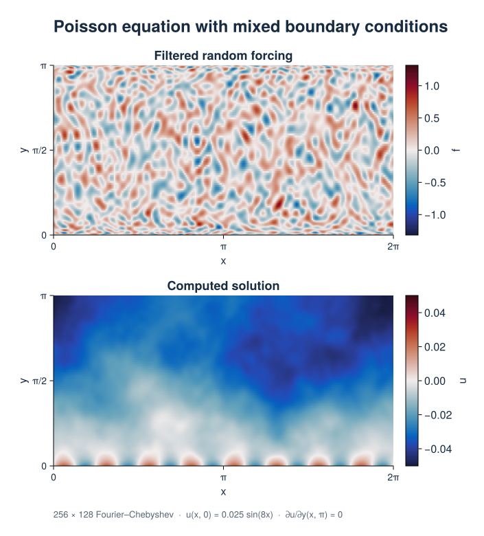

2D Poisson Equation
This example solves Poisson's equation with mixed boundary conditions using filtered random forcing on a periodic strip and produces a solution heatmap. Start with the linear BVP guide for the basic solver setup.
Formulation
On $0\le x<2\pi$, $0\le y\le\pi$, solve
\[\partial_x^2 u+\partial_y^2u=f(x,y),\qquad u(x,0)=0.025\sin(8x),\qquad \partial_yu(x,\pi)=0.\]
The discretization has 256 Fourier grid points and 128 Chebyshev coefficients. Two tau fields retain the Fourier basis and jointly enforce the two wall conditions. Tarang evaluates the spatial Dirichlet expression on the wall.
The forcing uses seed 40, with Fourier bandwidth corresponding to 64 grid points and Chebyshev degrees 0 through 31. Tarang's low_pass_filter! filters Fourier axes, so the script truncates the Chebyshev coefficients explicitly.
Computed solution

The lower wall imposes the sinusoidal pattern; the interior solution is smoother than the forcing. This CPU Float64 run has a maximum unaugmented PDE residual $\max|\Delta u-f|\approx1.1\times10^{-9}$. The Dirichlet and Neumann errors are below $4\times10^{-13}$. The script checks both the PDE and the walls.
PNG · SVG · Fields and residuals (CSV) · Julia script
{kind=link}
{kind=link}
Run the example
From the repository root:
julia --project examples/bvp/poisson.jlReproduce the figures
The optional CairoMakie environment generates both BVP figures and their data downloads. The documentation build uses the saved assets.
julia --project=docs/figures -e 'using Pkg; Pkg.develop(path="."); Pkg.instantiate()'
julia --project=docs/figures docs/figures/boundary_value.jlComplete script
using Tarang
"""
poisson_example(; Nx=256, Ny=128)
Solve Poisson's equation with mixed wall conditions and filtered random forcing.
Run with `julia --project examples/bvp/poisson.jl`.
"""
function poisson_example(; Nx=256, Ny=128)
coords = CartesianCoordinates("x", "y")
dist = Distributor(coords; dtype=Float64, device=CPU())
xb = RealFourier(coords["x"]; size=Nx, bounds=(0.0, 2π))
yb = ChebyshevT(coords["y"]; size=Ny, bounds=(0.0, Float64(π)))
domain = Domain(dist, (xb, yb))
u = ScalarField(domain, "u")
f = ScalarField(domain, "f")
tau1 = ScalarField(dist, "tau1", (xb,), Float64)
tau2 = ScalarField(dist, "tau2", (xb,), Float64)
x, y = local_grids(dist, xb, yb)
fill_random!(f, "g"; seed=40)
low_pass_filter!(f; shape=(min(64, Nx ÷ 2), min(32, Ny ÷ 2)))
# Tarang's low_pass_filter! truncates Fourier axes; truncate Chebyshev
# degrees explicitly to obtain the (64, 32) forcing bandwidth.
ensure_layout!(f, :c)
get_coeff_data(f)[:, min(32, Ny ÷ 2)+1:end] .= 0
problem = LinearBoundaryValueProblem([u, tau1, tau2])
lift_basis = derivative_basis(yb, 2)
add_parameters!(problem; f, l1=lift(tau1, lift_basis, -1),
l2=lift(tau2, lift_basis, -2))
add_equation!(problem, "Δ(u) + l1 + l2 = f")
add_bc!(problem, "u(y=0) = 0.025*sin(8*x)")
add_bc!(problem, "∂y(u)(y=π) = 0")
solver = BoundaryValueSolver(problem)
solve!(solver)
ensure_layout!(u, :g)
solution = copy(get_grid_data(u))
ensure_layout!(f, :g)
forcing = copy(get_grid_data(f))
lap = evaluate(Δ(u))
ensure_layout!(lap, :g)
residual = copy(get_grid_data(lap)) .- forcing
uy = evaluate(Differentiate(u, coords["y"], 1))
ensure_layout!(uy, :g)
bottom_error = maximum(abs.(solution[:, 1] .- 0.025 .* sin.(8 .* x)))
top_error = maximum(abs, get_grid_data(uy)[:, end])
residual_error = maximum(abs, residual)
@info "Poisson verification" bottom_error top_error residual_error
@assert bottom_error < 1e-9
@assert top_error < 1e-9
@assert residual_error < 1e-7
return (; x=collect(x), y=collect(y), solution, forcing, residual,
bottom_error, top_error, residual_error)
end
if abspath(PROGRAM_FILE) == @__FILE__
poisson_example()
end